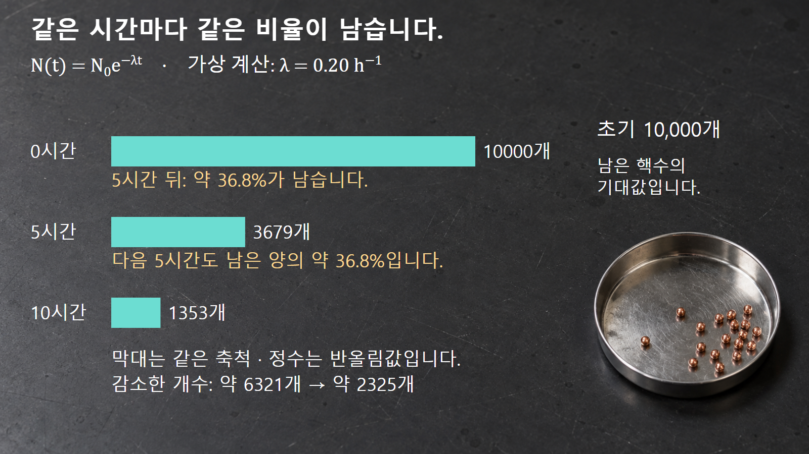
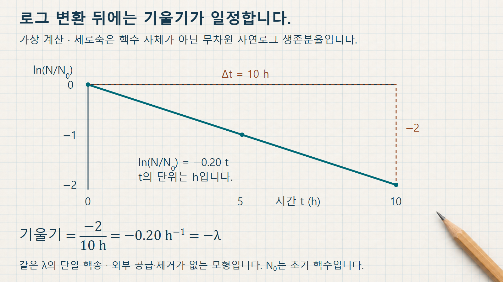

방사성붕괴와 시간 · 049
지수붕괴법칙
남은 핵수에 비례해 줄어드는 속도
지수붕괴법칙은 초기 핵수와 시간을 연결합니다. 같은 간격의 잔존 비율을 계산하고, 활동도 측정값에서 붕괴상수를 역산합니다.
남은 핵수가 감소 속도를 결정하는 모형
지수붕괴법칙은 같은 핵종과 핵상태의 핵들이 일정한 붕괴상수 λ로 독립적으로 붕괴할 때, 남아 있는 핵수의 기대값을 시간과 연결합니다. 외부에서 새 핵이 공급되거나 물리적으로 제거되지 않는 시료를 생각합니다. 남은 핵이 많을수록 단위 시간에 붕괴할 핵도 많고, 적게 남을수록 감소 속도도 작아집니다.
이 관계를 dN/dt=−λN으로 씁니다. 왼쪽은 핵수의 시간 변화율이며, 오른쪽의 마이너스 부호는 관심 모핵이 줄어든다는 뜻입니다. 이는 시료의 모든 원자나 질량이 그대로 사라진다는 뜻이 아닙니다. 모핵이 다른 핵종이나 상태로 바뀌므로 지금 세고 있는 모핵의 개수가 감소합니다.
이 글에서 N은 중성자수가 아니라 남아 있는 관심 핵종의 핵수입니다. N0는 기준시각 t=0에서의 초기 핵수이며, λ와 t의 시간 단위를 맞추어 λt를 무차원으로 만듭니다.
지수함수에 담긴 초기값과 시간
DOE 교재 NP-01의 31쪽 식 1-4는 N(t)=N0e−λt를 제시합니다. t=0이면 지수항은 1이므로 N=N0입니다. 시간이 흐르면 지수항이 줄어 초기 핵수 중 남아 있는 비율을 나타냅니다.
어떤 시각 t에서 같은 길이 Δt만큼 더 기다리면 N(t+Δt)/N(t)=e−λΔt입니다. 이 비율에는 출발시각 t가 남지 않습니다. 따라서 같은 길이의 두 시간구간은 같은 잔존 비율을 갖지만, 처음 핵수가 달라 감소한 개수는 다릅니다.
활동도 A도 λN이므로 λ가 일정한 단일 핵종에서는 같은 지수비율로 변합니다. DOE 교재의 32쪽 식 1-5가 A(t)=A0e−λt를 별도로 적는 이유입니다. 핵수와 활동도의 단위는 다르지만 시간에 대한 비율은 같습니다.
예시 1: 5시간 간격의 핵수와 감소량
가상으로 N0=10,000개, λ=0.20 h−1이라고 하겠습니다. 5시간 뒤에는 λt=1이므로 N(5)=10,000e−1≈3,678.79개입니다. 10시간 뒤에는 N(10)=10,000e−2≈1,353.35개입니다. 그림에서는 각각 3,679개와 1,353개로 반올림합니다.
첫 5시간의 잔존 비율은 약 0.3679이고, 다음 5시간의 잔존 비율도 약 0.3679입니다. 그러나 감소량은 처음 약 6,321.21개, 다음 약 2,325.44개입니다. 두 번째 구간은 이미 줄어든 3,678.79개에서 시작하므로 같은 비율이 줄어도 감소량이 작습니다.
두 구간의 잔존 비율은 같지만 사라진 핵의 개수는 서로 다릅니다.

이 소수 핵수는 실제 핵을 쪼갠 개수가 아니라 집단의 기대값입니다. 충분히 많은 핵이 있는 시료에서 매끄러운 곡선이 유용하지만 실제 개별 시료의 핵수는 정수이며 통계적 변동이 있습니다. 그림의 트레이 속 구슬은 핵을 실제 개수대로 배치한 모형이 아닙니다.
예시 2: 두 활동도 측정값에서 λ 역산
같은 조건으로 보정한 활동도가 기준시각에 5,000 Bq, 2시간 뒤에 4,000 Bq인 가상 시료를 생각하겠습니다. 단일 핵종이고 공급·제거가 없다는 전제에서 A(2)/A(0)=0.8입니다. 따라서 λ=−ln(0.8)/(2 h)≈0.11157 h−1입니다.
다음 2시간도 같은 조건이면 활동도는 4,000×0.8=3,200 Bq로 예상합니다. 이전 감소량 1,000 Bq를 다시 빼서 3,000 Bq라고 하면 같은 양씩 줄어드는 선형 감소를 가정한 셈입니다. 두 번째 구간에서도 적용하는 것은 20% 감소라는 비율입니다.
여기서 ln은 자연로그이며 밑이 10인 상용로그와 다릅니다. 계수율 원자료를 활동도처럼 바로 대입하려면 배경과 검출효율, 방출확률, 측정기하 등이 일정하거나 적절히 보정되어야 합니다. 두 점으로 얻은 값은 주어진 모형을 가정한 추정이며, 혼합 핵종이나 측정오차를 배제한 검증 자체는 아닙니다.
로그 좌표에서 확인하는 기울기
지수식의 양변을 초기값으로 나누고 자연로그를 취하면 ln[N(t)/N0]=−λt가 됩니다. DOE 방사선관리 교육자료의 1.06-29~31쪽은 지수감소를 로그 눈금에서 직선으로 읽는 방식을 설명합니다. 이 글의 그림은 생존분율의 자연로그를 세로축에 직접 표시한 형태입니다.
첫 번째 예시에서 t=0, 5, 10 h이면 자연로그 생존분율은 각각 0, −1, −2입니다. 가로 변화 10 h에 대해 세로 변화가 −2이므로 기울기는 −0.20 h−1, 즉 −λ입니다. 감소곡선이 로그 변환으로 직선이 되어도 붕괴 과정 자체가 선형으로 바뀐 것은 아닙니다.
세 점을 자연로그로 옮기면 기울기가 일정한 직선이 됩니다.

세로축이 자연로그인지 상용로그인지에 따라 기울기의 수치와 환산계수가 달라집니다. 또 로그는 양수에 대해서만 정의되므로 배경을 뺀 계수가 0 이하가 되는 구간을 임의로 로그 그래프에 넣어서는 안 됩니다.
붕괴 보정과 단일 지수의 적용 경계
시료를 준비한 시각과 측정한 시각이 다르면 활동도를 같은 기준시각으로 환산하는 데 지수법칙을 사용합니다. 두 시료를 비교할 때도 시각 차이를 보정해야 핵종재고의 차이를 해석할 수 있습니다. 실제 보고에는 핵종, λ 또는 반감기의 출처, 기준시각과 단위를 함께 남깁니다.
부모핵종의 붕괴로 새로운 관심 핵종이 계속 생기면 dN/dt에는 생성항이 필요합니다. 두 방사성 핵종이 섞여 있으면 총활동도는 일반적으로 서로 다른 지수함수의 합입니다. 따라서 한 개의 λ로 전체 자료를 맞추는 방식이 타당한지는 핵종 구성과 공급 조건을 먼저 살펴야 합니다.
수학적 기대값 곡선은 유한한 시간에 정확히 0에 닿지 않습니다. 그러나 유한한 실제 시료에서는 마지막 핵의 붕괴가 확률적으로 일어날 수 있습니다. 곡선이 양수라는 이유로 핵이 영원히 반드시 남는다고 말하거나, 계측 신호가 보이지 않는다는 이유로 핵수가 0이라고 단정하지 않습니다.
선형 감소와 지수 감소의 판별
동일 간격마다 빼는 양이 일정한지, 곱하는 비율이 일정한지를 구분하면 두 모형을 비교할 수 있습니다. 로그 직선은 단일 지수모형의 점검 도구이며, 핵종 구성과 측정 조건을 확인하는 과정을 대신하지 않습니다.
| 관점 | 같은 시간 간격의 변화 | 이 글의 예시 |
|---|---|---|
| 선형 감소 | 같은 양을 차감 | 5,000→4,000→3,000 |
| 지수 감소 | 같은 비율을 곱함 | 5,000→4,000→3,200 |
| 자연로그 생존분율 | 같은 기울기의 직선 | 기울기 −λ |
| 혼합·지속 생성 시료 | 단일 지수 적용을 먼저 검토 | 성분별 식 또는 생성항 필요 |